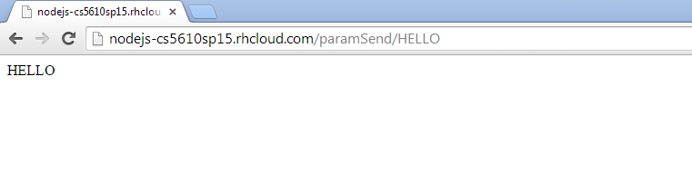

http://nodejs-cs5610sp15.rhcloud.com/paramSend/HELLO

The response echos back the parameter passed in URL.
Node.js is an open source, cross-platform runtime environment for server-side and networking applications.
Node.js applications are written in JavaScript, and can be run within the Node.js runtime on OS X, Microsoft Windows, Linux and FreeBSD.
Node.js provides an event-driven architecture and a non-blocking I/O API that optimizes an application's throughput and scalability.
These technologies are commonly used for real-time applications.
Node.js uses the Google V8 JavaScript engine to execute code, and a large percentage of the basic modules are written in JavaScript.
Node.js contains a built-in library to allow applications to act as a Web server without software such as Apache HTTP Server or IIS.
You can download NodeJS from here.
In continuation from my previous experiment where I hard-coded the URL and sent a particular message based on the URL, here the user can dynamically change the URL and can get a message depending on the parameter set.
Express is the framework used here which is declared as required, require('express') will import the require library to run the application using Express framework.
I then use the app namespace to initialzer a get method. This method fetches the parameter from the url which is requested for using req.params.param and displays that parameter.
Server-side Javascript Code
var express = require('express');
var app = express(); //create an instance
app.get('/paramSend/:param', function(req,res){
var param = req.params.param;
res.send(param);
});